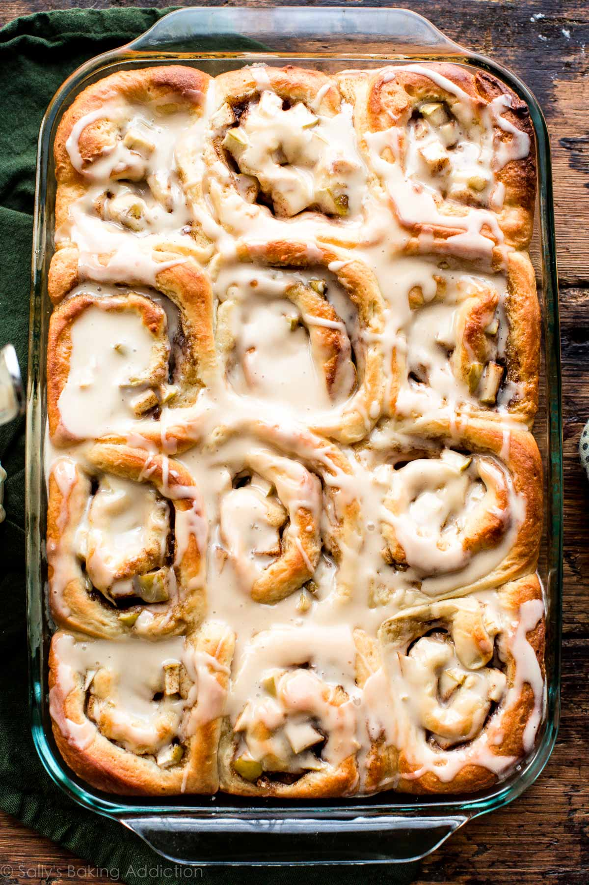

Apple Cinnamon Rolls

Homemade apple cinnamon rolls have warm and gooey centers, golden brown edges, and a generous drizzle of icing on top.
1 cup (240ml)whole milk135 gwhite sugar2¼ tsp (1 pack)instant or active dry yeast½ tspsalt1large egg1 tspvanilla extract113 g (1 stick)butter at room temperature in cubes4½ cups (540g)all-purpose flour
Place everything except the butter, in a stand mixer with the dough hook on low (speed 2 on KitchenAid) for 10 minutes.
Add the cubes of butter and let it run for another 10 minutes, until it comes of the sides easily.
Set aside and cover with some plastic and a kitchen towel for 2 hours or more to rise until double in size.
Grease the bottom and sides of a 9×13-inch baking dish or line with parchment paper.
Roll out the dough: Punch down the dough to release the air. Place dough on a lightly floured work surface and using a lightly floured rolling pin, roll dough into a 12×18-inch rectangle. Make sure the dough is smooth and evenly thick. If the dough keeps shrinking as you roll it out, stop what you’re doing, cover it lightly, and let it rest for 10 minutes to relax the gluten. When you return to the dough, it should stretch out much easier.
6 tbsp (85g)unsalted butter, softened to room temperature½ cup (100g)brown sugar1½ tbspground cinnamon2 cups (250g)peeled chopped apples (about 2 medium apples)
Fill the rolls: Spread the softened butter all over the dough. In a small bowl, toss the brown sugar and cinnamon together until combined and then sprinkle evenly over the dough. Top evenly with chopped apples. Tightly roll up the dough to form an 18-inch-long log. Cut into 18 equal rolls. Arrange them in the prepared baking pan. Cover the rolls and let rise for 1 hour.
Preheat oven to 375°F (190°C) and bake for 25 minutes, uncovered.
Cool them slightly (for 10 minutes), and then apply the melisglasur (icing). Enjoy!
You can freeze them once they’re cool and reheat at 350 fahrenheit (175 celsius) for 3-4 minutes.